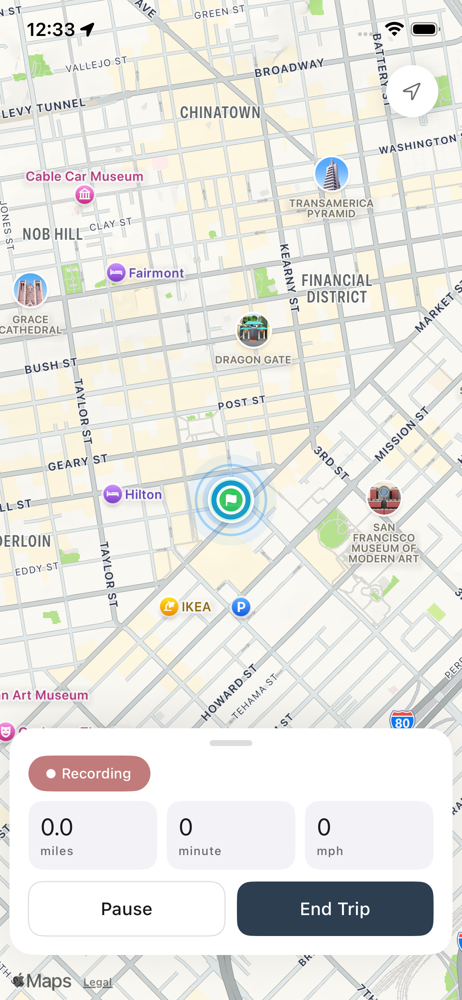

Auto Trip Detection
Let the app detect driving in the background and start building the trip for you.
TripLogger helps you capture mileage without turning your day into manual admin. Review clean records, stay organized year-round, and keep tax time simple.

TripLogger stays focused: three clean ways to record a trip, depending on how automatic or hands-on you want the experience to be.
Let the app detect driving in the background and start building the trip for you.
Start a trip yourself when you want full live visibility while you drive.
Backfill past mileage when you need to add a trip after the fact.
TripLogger also helps you stay ahead of follow-ups, understand your records faster, and keep spending attached to the work that created it.
Keep recurring tasks, deadlines, and follow-ups visible before they become last-minute work.
Use AI to turn saved trips and records into answers, instead of manually digging through screens.
Attach spending to the trips behind it so your records stay cleaner and easier to trust later.
TripLogger is designed to stay quiet while you drive and useful when you need your records.